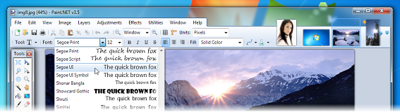
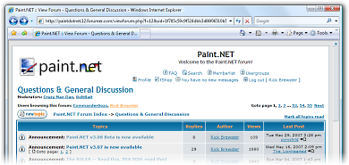
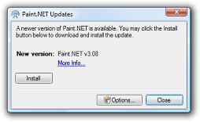
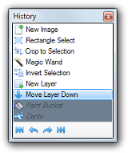

Simple, intuitive, and innovative user interface
Every feature and user interface element was
designed to be immediately intuitive and quickly
learnable without assistance. In order to handle
multiple
images easily, Paint.NET uses a
tabbed document
interface. The tabs display a live thumbnail of the
image instead of a text description. This makes
navigation very simple and fast.
The interface is
also enhanced for Aero Glass if you are using Windows 7
or Vista. |
| |
Performance
Extensive work has gone into making Paint.NET the fastest image editor
available. Whether you have a netbook with a power-conscious Atom CPU, or a Dual Intel
Xeon workstation with 8 blazingly fast processing cores,
you can expect Paint.NET to start up quickly and be
responsive to every mouse click. |
| |
Layers
Usually only found on expensive or complicated
professional software, layers form the basis for a rich
image composition experience. You may think of them as a
stack of transparency slides that, when viewed together
at the same time, form one image. |
| |
|
| |
Active Online Community
Paint.NET has an
online forum with a friendly, passionate, and
ever-expanding community. Be
sure to check out the constantly growing list of
tutorials and
plugins! |
| |
Automatically Updated
Updates are free, and
contain new features, performance
improvements, and bug fixes. Upgrading to the latest
version is very simple, requiring only two clicks of the
mouse.
|
Special Effects
Many special effects are included for enhancing and perfecting
your images. Everything from blurring, sharpening,
red-eye removal, distortion, noise, and embossing are
included. Also included is our unique 3D Rotate/Zoom
effect that makes it very easy to add perspective and
tilting.
Adjustments are also included which help you
tweak an image's brightness, contrast, hue, saturation,
curves, and levels. You can also convert an image to
black and white, or sepia-toned. |
| |
Powerful Tools
Paint.NET includes simple tools for drawing shapes,
including an easy-to-use curve tool for drawing splines
or Bezier curves. The Gradient tool, new for 3.0, has
been cited as an innovative improvement over similar tools
provided by other software. The facilities for creating and working
with selections is powerful, yet still simple enough to
be picked up quickly. Other powerful tools include the
Magic Wand for selecting regions of similar color, and
the Clone Stamp for copying or erasing portions of an
image. There is also a simple text editor, a tool for
zooming, and a Recolor tool. |
| |
|
| |
|
Unlimited History
Everybody makes mistakes, and everybody changes their
mind. To accommodate this, every action you
perform on an image is recorded in the History window
and may be undone. Once you've undone an action, you can
also redo it. The length of the history is only limited
by available disk space. |
| |
Free!
Paint.NET doesn't cost a dime. |
| |
|